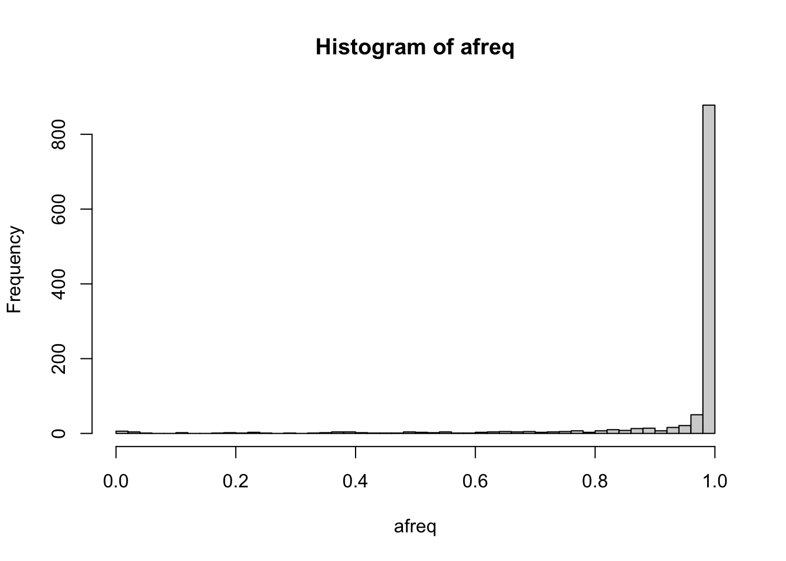

2 GDS format
GDS is Genomic Data Structure, a storage format that can efficiently store genomic data and provide fast random access to subsets of the data. For more information on GDS for sequence data, read the SeqArray package vignette.
2.1 Exploring a GDS file
To use the R packages developed at the University of Washington for sequence data, we first need to convert a VCF file to GDS. (If the file is BCF, use https://samtools.github.io/bcftools/bcftools.html to convert to VCF.)
## Loading required package: gdsfmtrepo_path <- "https://github.com/smgogarten/GENESIS_workshop_2026/raw/main"
if (!dir.exists("data")) dir.create("data")
vcffile <- "data/1KG_phase3_subset_chr1.vcf.gz"
if (!file.exists(vcffile)) download.file(file.path(repo_path, vcffile), vcffile)
gdsfile <- "data/1KG_phase3_subset_chr1.gds"
seqVCF2GDS(vcffile, gdsfile, fmt.import="GT", storage.option="LZMA_RA", verbose=FALSE)We can interact with the GDS file using the SeqArray package.
## Object of class "SeqVarGDSClass"
## File: /Users/stephanie/Bioconductor/GENESIS_workshop_2026/data/1KG_phase3_subset_chr1.gds (70.5K)
## + [ ] *
## |--+ description [ ] *
## |--+ sample.id { Str8 1126 LZMA_ra(9.66%), 877B } *
## |--+ variant.id { Int32 1120 LZMA_ra(17.5%), 793B } *
## |--+ position { Int32 1120 LZMA_ra(78.5%), 3.4K } *
## |--+ chromosome { Str8 1120 LZMA_ra(4.55%), 109B } *
## |--+ allele { Str8 1120 LZMA_ra(26.0%), 1.2K } *
## |--+ genotype [ ] *
## | |--+ data { Bit2 2x1126x1121 LZMA_ra(8.34%), 51.4K } *
## | |--+ extra.index { Int32 3x0 LZMA_ra, 18B } *
## | \--+ extra { Int16 0 LZMA_ra, 18B }
## |--+ phase [ ]
## | |--+ data { Bit1 1126x1120 LZMA_ra(0.11%), 177B } *
## | |--+ extra.index { Int32 3x0 LZMA_ra, 18B } *
## | \--+ extra { Bit1 0 LZMA_ra, 18B }
## |--+ annotation [ ]
## | |--+ id { Str8 1120 LZMA_ra(40.4%), 3.6K } *
## | |--+ qual { Float32 1120 LZMA_ra(2.46%), 117B } *
## | |--+ filter { Int32,factor 1120 LZMA_ra(2.46%), 117B } *
## | |--+ info [ ]
## | \--+ format [ ]
## \--+ sample.annotation [ ]# the unique sample identifier comes from the VCF header
sample.id <- seqGetData(gds, "sample.id")
length(sample.id)## [1] 1126## [1] "HG00096" "HG00097" "HG00099" "HG00100" "HG00101" "HG00102"# a unique integer ID is assigned to each variant
variant.id <- seqGetData(gds, "variant.id")
length(variant.id)## [1] 1120## [1] 1 2 3 4 5 6
We can define a filter on the gds object. After using the seqSetFilter command, all subsequent reads from the gds object are restricted to the selected subset of data, until a new filter is defined or seqResetFilter is called.
## # of selected samples: 5
## # of selected variants: 10Genotype data is stored in a 3-dimensional array, where the first dimension is always 2 for diploid genotypes. The second and third dimensions are samples and variants, respectively. The values of the array denote alleles: 0 is the reference allele and 1 is the alternate allele. For multiallelic variants, other alternate alleles are represented as integers > 1.
## [1] 2 5 10## , , 1
##
## sample
## allele [,1] [,2] [,3] [,4] [,5]
## [1,] 0 0 0 0 0
## [2,] 0 0 0 0 0
##
## , , 2
##
## sample
## allele [,1] [,2] [,3] [,4] [,5]
## [1,] 0 0 0 0 0
## [2,] 0 0 0 0 0The SeqVarTools package has some additional functions for interacting with SeqArray-format GDS files.
## variant
## sample 1 2 3 4 5 6 7 8 9 10
## HG00096 "0|0" "0|0" "0|0" "0|0" "0|0" "0|0" "0|0" "0|0" "0|0" "0|0"
## HG00097 "0|0" "0|0" "0|0" "0|0" "0|0" "0|0" "0|0" "0|0" "0|0" "0|0"
## HG00099 "0|0" "0|0" "0|0" "0|0" "0|0" "0|0" "0|0" "0|0" "0|0" "0|0"
## HG00100 "0|0" "0|0" "0|0" "0|0" "0|0" "0|0" "0|0" "0|0" "0|0" "0|0"
## HG00101 "0|0" "0|0" "0|0" "0|0" "0|0" "0|0" "0|0" "0|0" "0|0" "0|0"## variant
## sample 1 2 3 4 5 6 7 8 9 10
## HG00096 "C|C" "C|C" "C|C" "C|C" "T|T" "G|G" "G|G" "A|A" "A|A" "C|C"
## HG00097 "C|C" "C|C" "C|C" "C|C" "T|T" "G|G" "G|G" "A|A" "A|A" "C|C"
## HG00099 "C|C" "C|C" "C|C" "C|C" "T|T" "G|G" "G|G" "A|A" "A|A" "C|C"
## HG00100 "C|C" "C|C" "C|C" "C|C" "T|T" "G|G" "G|G" "A|A" "A|A" "C|C"
## HG00101 "C|C" "C|C" "C|C" "C|C" "T|T" "G|G" "G|G" "A|A" "A|A" "C|C"## variant
## sample 1 2 3 4 5 6 7 8 9 10
## HG00096 2 2 2 2 2 2 2 2 2 2
## HG00097 2 2 2 2 2 2 2 2 2 2
## HG00099 2 2 2 2 2 2 2 2 2 2
## HG00100 2 2 2 2 2 2 2 2 2 2
## HG00101 2 2 2 2 2 2 2 2 2 2## variant
## sample 1 2 3 4 5 6 7 8 9 10
## HG00096 0 0 0 0 0 0 0 0 0 0
## HG00097 0 0 0 0 0 0 0 0 0 0
## HG00099 0 0 0 0 0 0 0 0 0 0
## HG00100 0 0 0 0 0 0 0 0 0 0
## HG00101 0 0 0 0 0 0 0 0 0 0## [1] "C" "C" "C" "C" "T" "G" "G" "A" "A" "C"## [1] "G" "T" "T" "T" "C" "A" "A" "T" "C" "T"## variant.id chr pos ref alt
## 1 1 1 970546 C G
## 2 2 1 985900 C T
## 3 3 1 1025045 C T
## 4 4 1 1265550 C T
## 5 5 1 1472676 T C
## 6 6 1 1735725 G A
## 7 7 1 2185887 G A
## 8 8 1 2283689 A T
## 9 9 1 2629401 A C
## 10 10 1 2710895 C T## # of selected samples: 1,126
## # of selected variants: 1,120## n
## 2 3 4
## 1099 20 1# some variants have more than one alternate allele
multi.allelic <- which(n > 2)
altChar(gds)[multi.allelic]## [1] "GT,G" "G,T" "A,T" "A,T"
## [5] "ATG,ATGTG" "C,G" "A,T" "C,T"
## [9] "A,C" "TAA,T" "GTTA,GTTT" "GCC,GCCC,G"
## [13] "A,C" "A,C" "A,C" "CAAGCAT,CGAGCAT"
## [17] "CATTATT,C" "AT,C" "TGTGA,C" "CCATT,CCATTCATT"
## [21] "C,G"## [1] "GT" "G" "A" "A" "ATG" "C" "A"
## [8] "C" "A" "TAA" "GTTA" "GCC" "A" "A"
## [15] "A" "CAAGCAT" "CATTATT" "AT" "TGTGA" "CCATT" "C"## [1] "G" "T" "T" "T" "ATGTG" "G"
## [7] "T" "T" "C" "T" "GTTT" "GCCC"
## [13] "C" "C" "C" "CGAGCAT" "C" "C"
## [19] "C" "CCATTCATT" "G"##
## FALSE TRUE
## 110 1010##
## FALSE TRUE
## 99 1021We can also return variant information as a GRanges object from the GenomicRanges package. This format for representing sequence data is common across many Bioconductor packages. Chromosome is stored in the seqnames column. The ranges column has variant position, which can be a single base pair or a range.
## GRanges object with 1120 ranges and 0 metadata columns:
## seqnames ranges strand
## <Rle> <IRanges> <Rle>
## 1 1 970546 *
## 2 1 985900 *
## 3 1 1025045 *
## 4 1 1265550 *
## 5 1 1472676 *
## ... ... ... ...
## 1116 1 248715186 *
## 1117 1 248715606-248715610 *
## 1118 1 248761613 *
## 1119 1 248894546 *
## 1120 1 249149558 *
## -------
## seqinfo: 1 sequence from an unspecified genome; no seqlengths2.2 Exercises
Set a filter selecting only multi-allelic variants. Inspect their genotypes using the different methods you learned above. Use the
alleleDosagemethod to find dosage for the second (and third, etc.) alternate allele.Use the
hwefunction in SeqVarTools to run a Hardy-Weinberg Equilibrium test on each variant. Identify a variant with low p-value and inspect its genotypes. (Note that the HWE test is only valid for biallelic variants, and will returnNAfor multiallelic variants.)